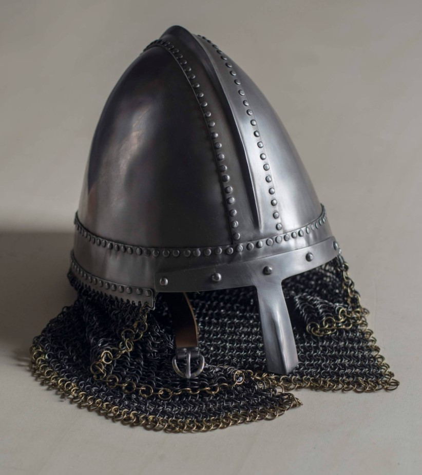

Vitajte v SONET
webovom sídle tímu 14
„Nothing's true, everything's permitted“ - Altaïr Ibn-La'Ahad
Úvod
Vitajte na webovej prezentačnej stránke tímu číslo 14. Jedná sa o predmet tímový projekt, organizovaný na FIIT STU v Bratislave. Názov nášho tímu je SONET, kedže aj veršov v sonete je 14 a myslíme si, že náš vývoj sa podobá vývoju deja v literárnej dráme. Venujeme sa téme : Vnorený systém pre zabezpečený zber dátCieľ projektu
Cieľom projektu je vytvorenie prototypu pre komplexný systém, ktorý bude schopný zbierať dáta z rôznych druhov bytových meračov (studená, teplá voda a pod.) a následne zozbierané dáta vizualizovať. Dôležité je klásť dôraz na spoľahlivosť, odolnosť, výdrž a bezpečnosť. Systém by mal byť energeticky autonómny. Prenos dát bude realizovaný bezdrôtovo a ako zdroj energie budú pravdepodobne využité Peltierové články.Tím
Sme päťčlenný tím ľudí, zaujímajúcich sa o praktické veci, no máme aj zmysel pre humor a umelecké veci. Väčšina tímu študovala odbor internetové technológie na FIIT STU, kde ich (pokiaľ sa tým nezaujímali dovtedy) tieto veci oslovili. Vzhľadom k tomu, že dvaja členovia tímu pracujú v oblasti tvorby systémov, ktoré riadia prístup, platby, ďalší v oblasti zdravotníctva, chopili sme sa iniciatívy v tom spoločnými silami vybudovať niečo čoho sa dá dotknúť. Znalostný záber tímu nie je úzky, či už sa jedná o web, server, databázu, 3D grafiku alebo IoT zariadenie. Cielene sme pri výbere projektu šli po tejto téme, kedže sme sa chceli popasovať s náročnými požiadavkami na tento projekt a zlepšiť situáciu aj v tejto-

Vladimír Kunštár
Product OwnerMá vlastnú firmu IFY s.r.o. , viedol už tímový projekt Breyslet, a okrem záľuby v tehcnike sa rád venuje turistike.
-
Maroš Čergeť
Scrum-masterVo voľnom čase sa venuje 3D Grafike a historickému šermu. V minulosti sa venoval klasickému spevu a divadlu.
-
Vladimír Bachan
Hardware architectMedzi jeho záľuby patrí jazda na štvorkolke. V minulosti sa aktívne venoval opravovaniu hardvéru.
-
Tomáš Zátka
Server managerMedzi jeho záľuby patrí programovanie a gaming. Má rad turistiku, rybárčenie či iné aktivity v prírode. V minulosti sa venoval bojovému umenie Aikidu. Medzi jeho obľúbené športy patrí lyžovanie.
-
Veronika Čípelová
Documentation managerMedzi jej záľuby patrí cestovanie, spoznávanie prírody a spôsobov akými sa dá žiť ekologicky. Má rada umenie a poriadok.
-
Róbert Yamkovyi
Database architectVo svojom voľnom čase sa venuje vývoju VR aplikácií. Má rád motoršport a cs